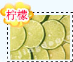
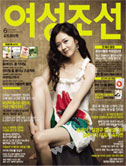

冯程教授 主任医师
毕业于上海第一医学院，现系深圳富华医疗美容医院院长。从事整形外科医疗临床及研究工作四十余年。特别是潜心研究医疗美容技术及医用美容材料。获得9项国家级专利。
姚飞主任 美容专家
毕业于北京中医大学，对中医治疗青春痘问题颇有研究，严谨求实的医德医风，在众多求美人士中享有极高的声望杨华 美容医师
从事美容行业10年，具有丰富的临床经验，成功帮助几千人摆脱青春痘的困扰，其提出的内调祛痘理论深得行业人士的认可小芳我的是从初中开始就在长痘痘了，用了很多产品都不见效。冬天还好些，可是一到夏天就不停的冒，还有就是来经期前几天也会长的。额头啊、脸颊，下巴那都会长，用你们的产品真的可以吗？
冯程教授您好，一般夏季天气比较炎热油脂分泌比较旺盛，加上体内容易毒素淤积就很容易产生痘痘，经期滋生痘痘主要是因为体内酸毒增多，要改善这种情况，首先要减少体内的酸毒.也就是少吃酸性食物，建议不吃或少吃油榨、腌制、可乐、酸牛奶、糖、坚果、豆类、荤菜。多喝水，多吃米饭、粗粮、多吃蔬菜。可以饮用“净痘清颜”进行护理改善，同时建议配合使用一些内调的食物或药品会更好。
-
杨榆为什么我没有熬夜，也很注意饮食，痘痘为什么还是长个不停？
姚飞主任皮肤的好坏与生活习惯、饮食等密切关联，生活规律了，痘痘肯定会有所好转，但是没有得到根治的话，很容易出现反复发。建议你用“净痘清颜”内调，只有彻底清除致病因子，铲除发病根源，才能根本上治愈青春痘。
-
方晓雪我的脸上有很多痘。还有很红的痘印，非常的烦恼。用过很多去豆产品也没有效果，你们的产品真能治好吗？
冯程教授“净痘清颜”与其他祛痘产品根本的区别在与不仅能从表面上把痘去掉，更能从根本上调整身体的内分泌机制，消除青春痘产生的根源，同时能彻底消除痘印，快速平复疤痕。保证不再反弹。
-
张小艳我是油性皮肤，脸上长痘已有3年了，用了很多产品都没有明显效果，医生说我的是血毒现象，现在看了你们的产品介绍很想试试，可是不知道像我这样的情况合适吗？
姚飞主任建议服用"净痘清颜"两个疗程以上。不仅仅能将青春痘彻底清除，更能有效平衡油脂分泌，平复痘痕和痘印的肌肤，抑制酪胺酸酵素的形成，提供肌肤高效润泽，改善肌肤微循环，缩小毛孔，舒缓肌肤敏感度．另外注意饮食，注意睡眠和饮食．
-
田学斌我的下巴老是长痘，已经有大概5年了，整个脸夏天很油，冬天干燥起皮，不知道怎么回事？
杨华医师您好，一般混合性皮肤T区油脂分泌旺盛容易阻塞毛囊产生粉刺痤疮，冬天面颊部位容易严重缺水干燥起皮，需要在面颊部位涂抹保湿乳或者保湿霜进行滋润。夏季要注意每天的清洁，可以饮用“净痘清颜”进行内调，改善肌肤水油平衡。
-
莉莉这个产品真的有这么好啊？我都用了好多产品了都没有什么好的效果。
冯程教授你好，产品选对了才会有效果。相信你喝了“净痘清颜”后，会信心十足。“净痘清颜”成份是纯天然草本植物提取精华，能有效排毒养颜，疏通汗腺，抗过敏止痒，修复受损皮肤，可以让粉刺、青春痘、痤疮、脂溢性皮炎、过敏性皮肤、螨虫、酒渣鼻迅速消除，收细毛孔。
-
勇强我已经24岁了,但是来一直长痘痘,尤其是吃热了就会长,还有每个月来月经时也会长出一两颗,我应该怎么办,才能让痘痘消除掉呢,长痘真的很让我烦恼,而且我的皮肤是两边干,T字部位油.
冯程教授你好！生理期前痘痘症状加剧，说明是由于内分泌失调而引起的。若想改善，建议可以饮用“净痘清颜”进行治疗祛痘同时还能溶脂祛垢、平衡油脂分泌，可以配合补水产品一起使用，可使趋于肌肤水油平衡状态。并且配合内在调理：1.保持情绪稳定，避免过激心理。 2.少食或忌食肥腻，甘甜、油炸、烩灸的食品，对动物类脂肪更需节制。3.内服清热解素，清利胃肠的中成药，如牛黄解毒片。内外兼治，即可根除。
-
方小姐你好！我最近下巴上长了好多痘痘，且结了痘疤，而且下巴周围也有一些粉刺，我想问一下用你们的产品能根除吗?
姚飞主任“净痘清颜”采用纯天然草本提取精华，有效疏通汗腺，抗过敏止痒，修复受损皮肤。令粉刺、青春痘、痤疮、脂溢性皮炎、过敏性皮肤、螨虫、酒渣鼻迅速消除，可以有效控油，平衡油脂，调节内分泌，收细毛孔，用后令肌肤白嫩红润，再现青春。


在线预订，请先提交您的订单，我们会在第一时间处理您的订单！

1、重度的粉刺痤疮青春痘患者--越是严重的痤疮，喝净痘清颜疗效越好！
-
2、因长期长痘留下的痘疤、痘痕、痘印、痘坑等患者，效果更加显著！

3、不愿意采用西药、避孕药治疗，担心西药副作用的患者。

4、因长了痤疮，精神压力大而导致学习成绩下降，受同学歧视、嘲笑，易发生心理疾病的学生。

百合花：百合有润肺止咳、清心安神、补中益气之功能，能有效调节内分泌，滋肝益胆，调理体内阴阳平衡。
-
维持人体各种组织和细胞间质生成，并保持它们正常生理机能，有很好的美白和抗氧化作用；而柠檬酸和苹果酸能清洁皮肤毛孔，使皮肤平滑。
- 
疏通经络，扩张末梢毛血管，改善血液循环，滋润皮肤。防止色素在皮肤内慢性沉淀，有效地清除体表中有碍美容的黄褐斑、雀斑、黑斑。

有效消除人体各个部位的细菌、炎症，对皮肤类囊肿、炎症效果尤佳。
- 